Dark Souls 2:
Scholar Of The First Sin
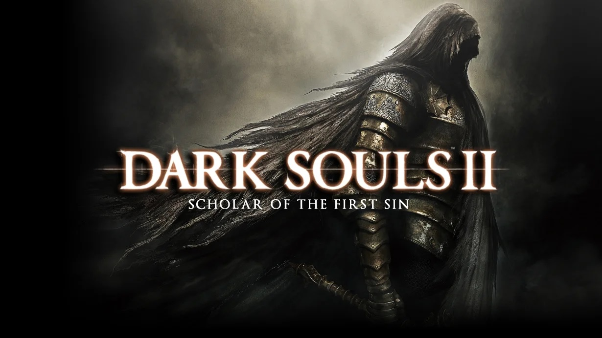
The Story
The story of Dark Souls II begins with a human who has become Undead, cursed to never die and doomed to eventually become a Hollow,
a zombie-like being with no memories or purpose. The protagonist is also known as the Bearer of the Curse.
To break the curse, the undead travels to the fallen kingdom of Drangleic and is tasked by the Emerald Herald with obtaining four Great Souls from powerful Old Ones,
whose names are long forgotten and forbidden. Once obtained, the Emerald Herald directs the undead to "Seek the King" in the capital.
After fighting through the remains of the royal guards, the player encounters the Queen Nashandra, who reveals that the king failed in his duty and fled his kingdom long ago.
She asks the protagonist to slay the king.
Near the end of the Queen's quest, the player learns that the ruin of the kingdom was in fact caused by Nashandra.
She came to the king and deceived him into launching an ill-fated invasion across the sea into the lands of the Giants.
She coveted their souls and sought to steal their power. Though the raid succeeded in stealing the Giant's unspecified power, the Giants retaliated.
Invading Drangleic, the Giants eventually destroyed the kingdom. With his kingdom in ruins, the king discovered Nashandra's true purpose and locked himself inside the Undead Crypt.
In order to confront Nashandra, the player character travels to the keep of Aldia, the King's brother, to obtain the Ashen Mist Heart, an artifact that allows a form of time travel,
by accessing the "memories" of corpses. The player must enter the memories of a deceased Giant to defeat the Giant Lord during the invasion and claim his power for their own.
Confronting the Emerald Herald one final time, she states that Nashandra is a fragment of Manus, the final boss in the Artorias of the Abyss expansion in Dark Souls.
She then asks the protagonist to put Nashandra to rest and to take the Throne of Want.
In the Scholar of the First Sin version of the game, the base story changes slightly, notably with the addition of Aldia after the defeat of Nashandra.
If the player has defeated King Vendrick, Aldia attempts to help the protagonist understand that there might be a way out of the endless cycle of death and rebirth.
The player is given a choice: they can either take the throne, thus allowing the cycle of Age of Fire and Dark to continue;
or the player can abscond the throne, resisting the effects of Hollowing and following their own unknown path beyond light or dark.
The Bosses
The Last Giant
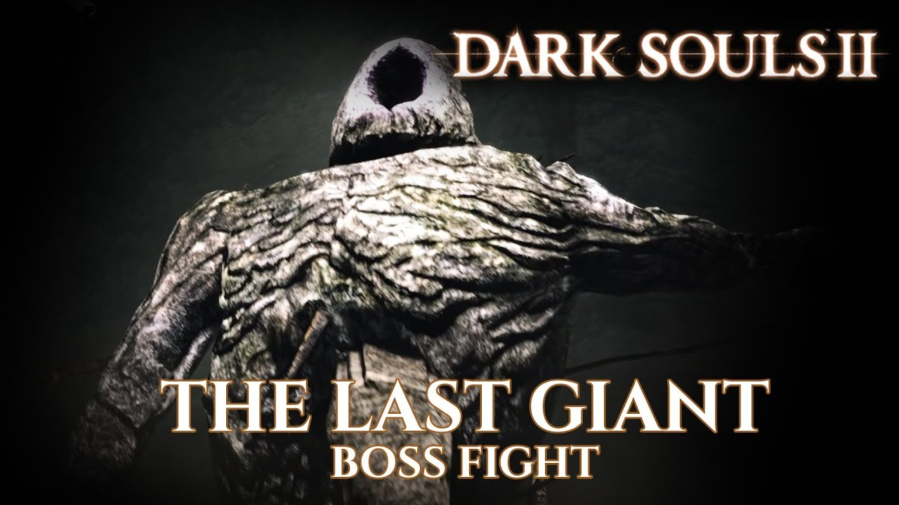
Dragonrider
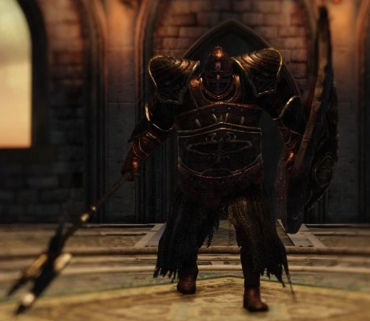
The Rotten

Flexile Sentry

Ruin Sentinels
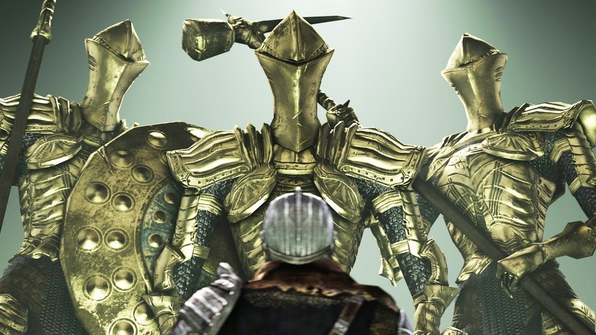
Old Dragonslayer
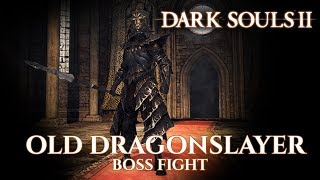
Royal Rat Vanguard
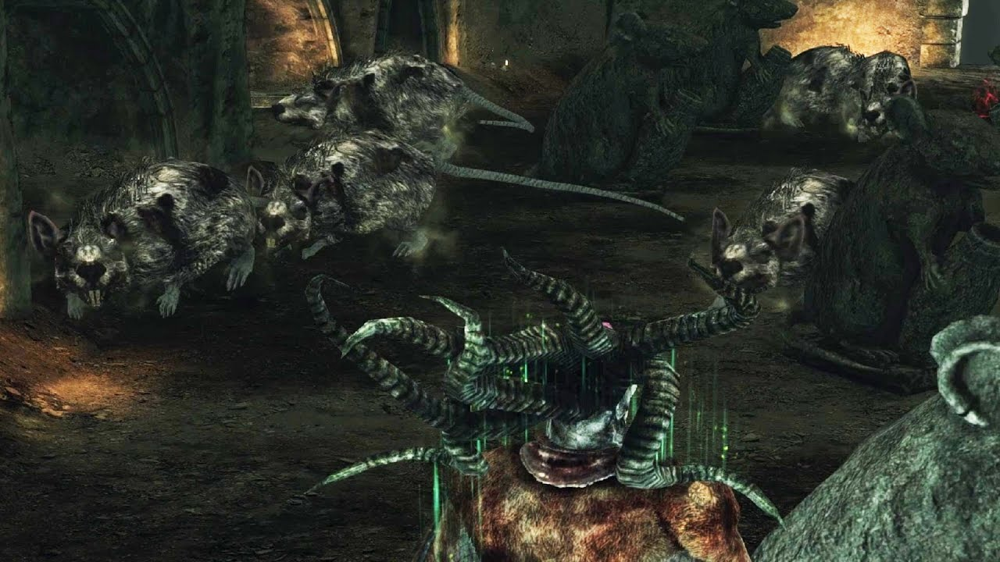
Skeleton Lords
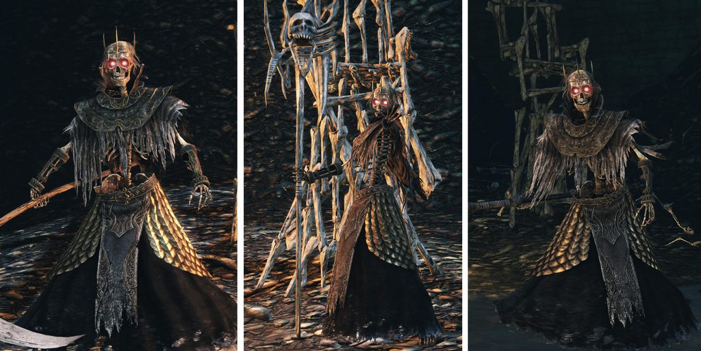
The Pursuer

Belfry Gargoyles
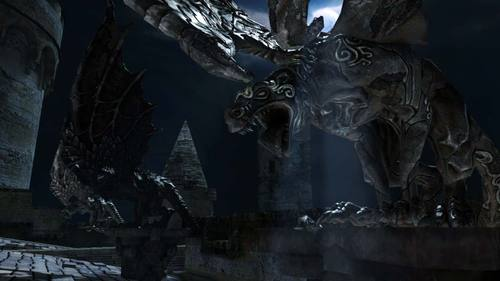
Executioner's Chariot

The Lost Sinner
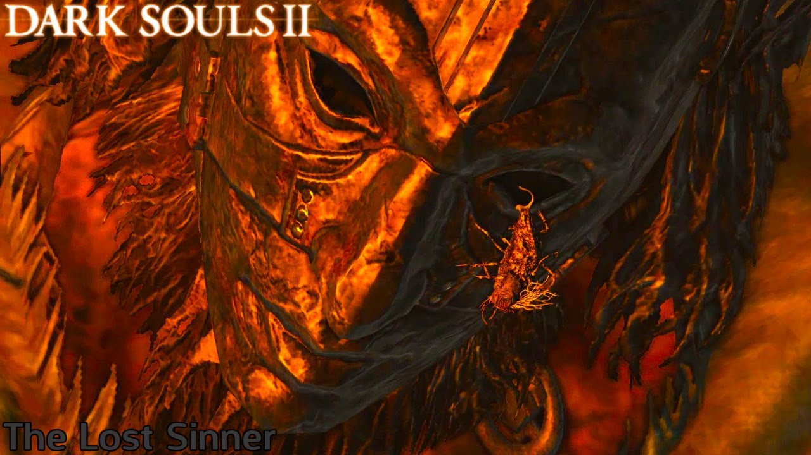
Prowling Magus and the Congregation
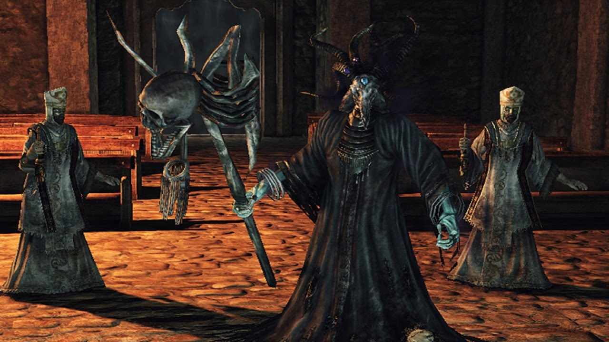
Scorpioness Najka
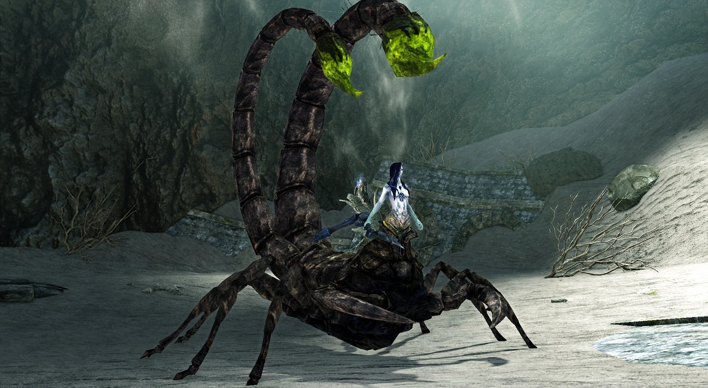
The Duke's Dear Freja

Covetous Demon
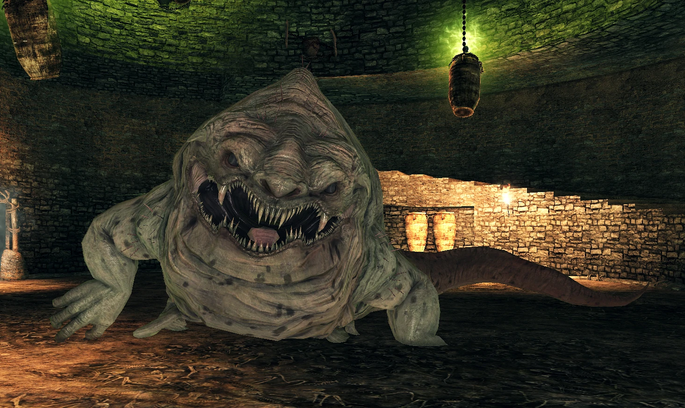
Dragonriders
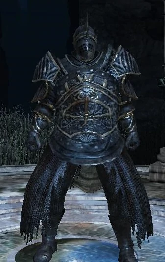
Looking Glass Knight

Mytha the Baneful Queen
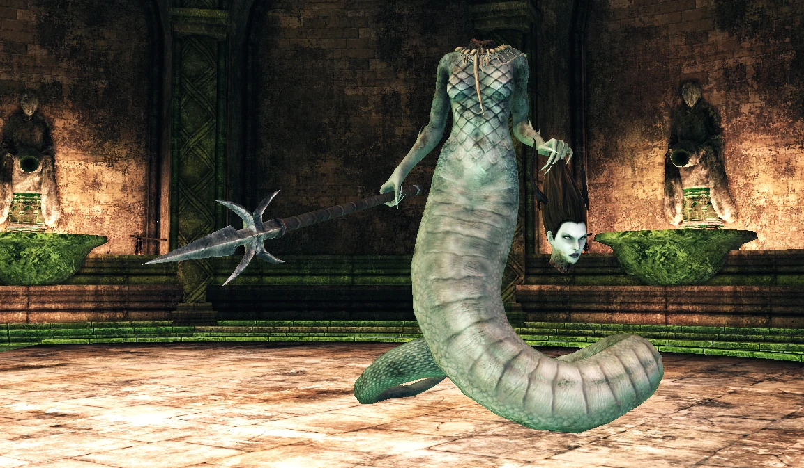
Smelter Demon
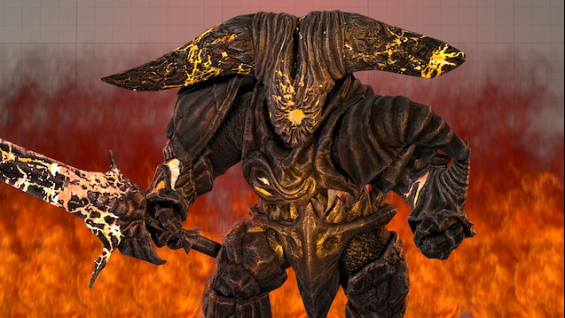
Old Iron King
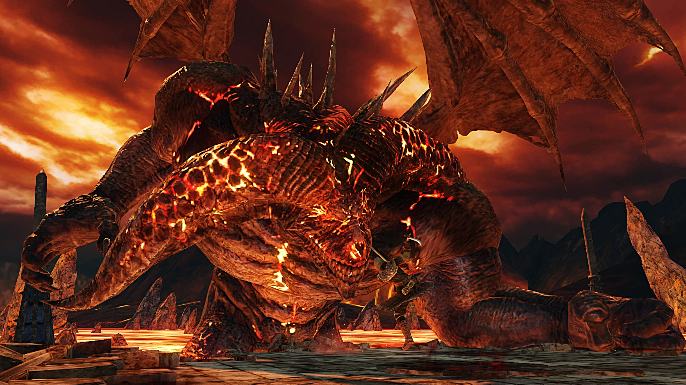
Demon of Song
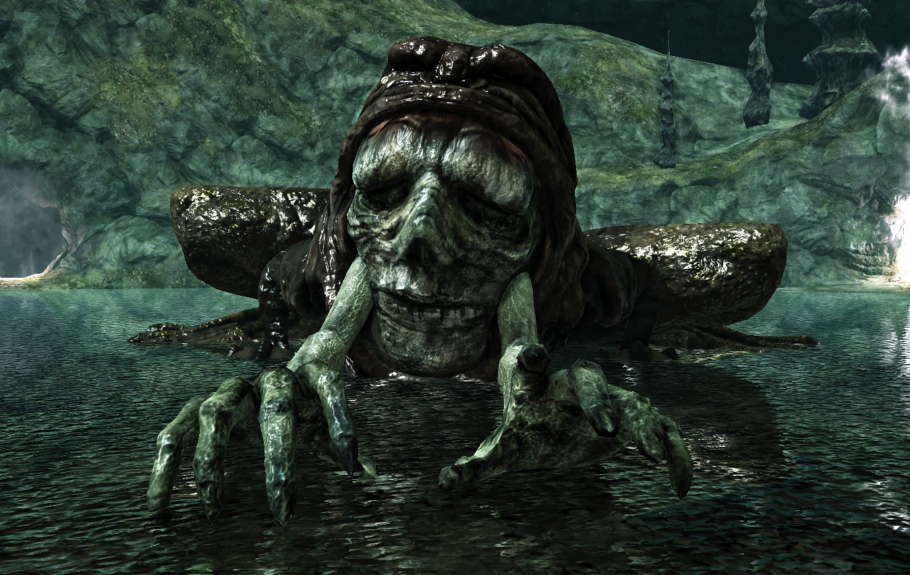
Giant Lord
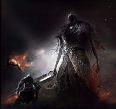
Guardian Dragon
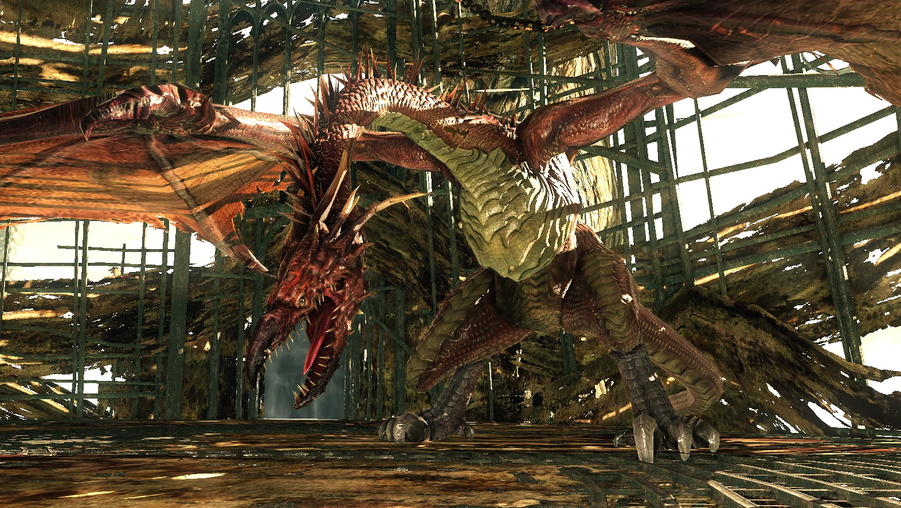
Velstadt, the Royal Aegis
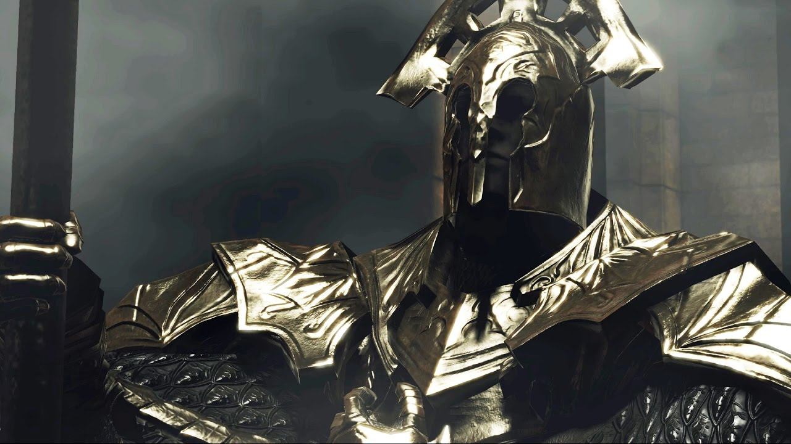
Throne Watcher and Throne Defender
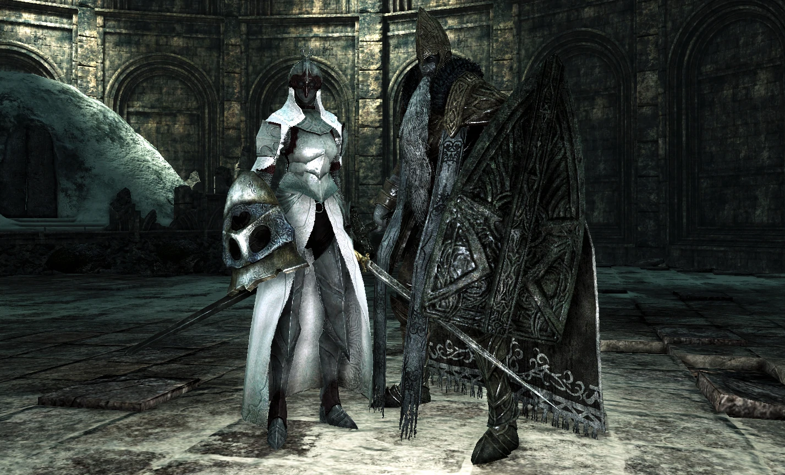
Nashandra (FINAL BOSS)
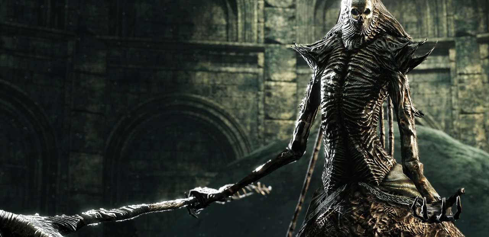